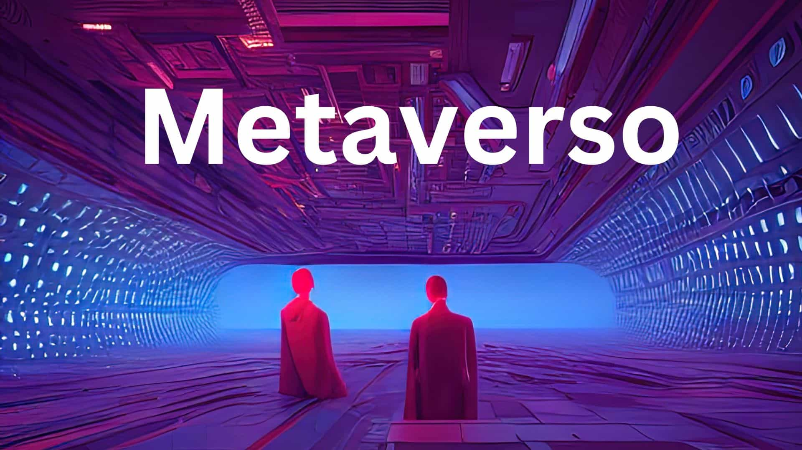

Vamos a intentar explicarte qué es exactamente el Metaverso, ese concepto de mundo virtual por el que Facebook o Google, Nvidia y Microsoft están decidiendo apostar hasta tal punto que Facebook le ha cambiado el nombre a su empresa por Meta. No es ningún tipo de concepto nuevo, y ya hemos visto coqueteos con él en el mundo literario y cinematográfico, con películas como 'Ready Player One' o 'Los Sustitutos'.
vamos a intentar explicarlo de la manera más sencilla posible, para que nadie se pierda con tecnicismos y todos podamos entender la idea aproximada de lo que es. Además, también intentaremos decirte algunas de las posibilidades que va a ofrecer, y darte una noción de cuánto falta y qué se necesita para que este concepto se convierta en realidad.
No se sabe exactamente cuál fue el origen del metaverso, pero si cuando se empezó a hablar de él. El concepto fue acuñado por el escritor estadounidense Neal Stephenson en su novela "Snow Crash" en 1992, en la cual describe un entorno virtual colectivo que podría convergir con la "realidad verdadera".
Su novela narra la historia de un joven que es repartidor de pizza en el mundo real, pero un príncipe guerrero samurái en el Metaverso. El descubrimiento sobre la existencia de un virus informático llamado "Snow Crash" en esa nueva realidad es el eje central de la trama. Lo curioso de esta novela es que Stephenson creó la primera referencia escrita de un mundo completamente virtual mucho antes de que se empezase a hablar sobre el ciberespacio. Además, Neal comienza a mencionar la idea de introducir avatares o personajes virtuales sustituibles de las personas reales del mundo tangible.
El Metaverso es un mundo virtual, uno al que nos conectaremos utilizando una serie de dispositivos que nos harán pensar que realmente estamos dentro de él, interactuando con todos sus elementos. Será como realmente teletransportarse a un mundo totalmente nuevo a través de gafas de realidad virtual y otros complementos que nos permitirán interactuar con él.
Los mundos virtuales no son nada nuevo, y existen una gran cantidad de ellos, sobre todo en el sector de los videojuegos. Tú te creas un personaje o avatar, y te adentras en ese mundo a vivir aventuras a través de tu ordenador. Sin embargo, el metaverso no busca ser un mundo de fantasía, sino una especie de realidad alternativa en la que podremos hacer las mismas cosas que hacemos hoy en día fuera de casa, pero sin movernos de la habitación.
El término metaverso viene de una novela de 1992 llamada 'Snow Crash', y es un término que se ha asentado para describir visiones de espacios de trabajo tridimensionales o virtuales. Este metaverso, por lo tanto, significa un mundo virtual en el que podemos interactuar, y que ha sido creado para parecerse a una realidad externa.
En cuanto al concepto preciso de metaverso por el que apuestan Facebook y otras empresas. La idea sería la de crear un universo paralelo y completamente virtual, al que podremos acceder con dispositivos de realidad virtual y realidad aumentada, de forma que podamos interactuar entre nosotros dentro de él, y desde fuera con el contenido que tenemos dentro.
La clave de este metaverso es que pueda ser totalmente inmersivo, o por lo menos mucho más de lo que es la actual realidad virtual. Sí, tendremos unas gafas que posiblemente sean parecidas a las actuales para sumergirnos en él, pero también sensores que registren nuestros movimientos físicos para que nuestro avatar dentro de ese metaverso haga exactamente lo mismo.
Incluso también se quede hacer que los dispositivos que usemos puedan interpretar nuestras expresiones faciales para que nuestro avatar en el metaverso pueda recrearnos, y que así el resto de personas con las que estemos interactuando puedan entender cómo nos sentimos. Vamos, que el lenguaje corporal también forme parte de estas interacciones virtuales.
Otra de las principales ideas del metaverso es que tengamos una total libertad de creación, tanto para hacer nuestro avatar parecido a nuestra persona física como para darle un aspecto diferente, y también para crear el entorno y nuestros negocios y habitaciones a nuestro gusto.
Piensa en cómo es Internet ahora. Está lleno de comunidades virtuales, redes sociales a las que accedemos desde diferentes dispositivos. Interactuamos con más personas de forma virtual que de forma física. Pues el metaverso sería dar un paso más para estrechar el mundo físico y el virtual, mezclándolos ambos en un universo nuevo administrado por la empresa que consiga imponer su metaverso.
Estos espacios presentan unas características en común:
A pesar de las creencias de que Mark Zuckerberg (CEO de Facebook) fue el primero en hablar de crear su propio metaverso en 2021, una serie de iniciativas desarrolladas en las últimas décadas son aquellas que dieron el impulso que esta tecnología necesitaba.
De hecho, en materia de software, la primera iniciativa surgió en la primera década de los años 90. La compañía Steve Jackson Games presentó en 1993 "The metaverse", un sistema de realidad virtual basado en texto conocido como MOO, en el que varios usuarios podían conectarse de forma simultánea en su boletín lluminati Online.
En esas fechas, el acceso a internet estaba restringido a pocos usuarios y tampoco había gafas de realidad virtual.
La aparición de algunos elementos electrónicos, como cascos y lentes de realidad virtual ha sido clave para vincular ambos mundos. En este sector destacan las tecnologías iniciadas por Oculus (hoy propiedad de Facebook), Microsoft y sus gafas Hololens, los sistemas Vive de HTC y los cascos de VR de PlayStation.
El metaverso todavía se encuentra en fase de desarrollo, en la que empresas como Facebook (ahora meta) están en proceso de crear infraestructuras para su correcto funcionamiento sin tener claro los límites de los que se podrá o no hacer.
Por otro lado, la intención de Zuckerberg es que los propios usuarios puedan aportar ideas y llevarlas a la práctica en el metaverso siempre y cuando la tecnología lo permita.
Lo que si sabemos es que será un paso más después de lo que hoy conocemos como internet, por lo que los principales cambios se producirán en la forma en la que consumimos, creamos contenidos y nos relacionamos socialmente por vía online.
Por lo tanto, ¿qué se podría hacer realmente en esta realidad paralela?:
Un ejemplo que funcionó fue cuando el rapero Travis Scott protagonizó un concierto en Fortnite y reunió cerca de 100.000 usuarios. Otra posibilidad sería obtener recompensas por videojuegos y pueda exhibirlo fuera del título pero en otras instancias del metaverso para mostrárselo a otros amigos virtuales.
La llegada de cualquier metaverso esta aún lejos, debido a la falta de infraestructuras, además de otros debates y dudas sobre cómo podría llevarse a cabo un modelo de negocios de esta naturaleza, ya sea a través de suscripciones, compras virtuales, publicidad, uso de datos de los usuarios y su privacidad.
Actualmente, las diferentes plataformas que están trabajando en metaversos todavía necesitan desarrollos nuevos de software y hardware para ofrecer la experiencia que prometen.
Zuckerberg, fundador de Facebook confirma que es un proyecto a largo plazo, por lo que aún puede tardar unos 10-15 años en estar preparado.
De hecho, es posible que no exista una fecha concreta para su lanzamiento, y que, por el contrario, los avances tecnológicos que se necesiten se vayan incorporando a medida que se encuentren disponibles.
Además de Meta, también otras compañías innovadoras como Microsoft, Google, Apple, Epic Games y muchas otras pertenecientes al mundo de la tecnología están desarrollando varias aplicaciones y herramientas para formar parte de esa nueva realidad virtual.
Además de las empresas de este sector, también hay otras que han mostrado su interés y desean aprovechar las oportunidades de negocios que ofrece el metaverso, ya que configurará un nuevo ecosistema financiero basado en criptomonedas y blockchain, pudiendo ser similar al del mundo físico.
La marca Nike presentó su idea de proyecto "Nikeland", una realidad paralela ubicada en la plataforma de juegos Roblox, que permite a sus usuarios hacer ejercicio o vestirse con ropa de la marca utilizando sus avatares.
Por otro lado, otras marcas como BMW tiene pensado crear una réplica exacta de sus fábricas y realizar pruebas virtuales que luego trasladarían a la vida real. La compañía inmobiliaria Metaverse property venderá parcelas en varios metaversos que ya se hayan creado, además de gestionar el alquiler o cuidado de las propiedades virtuales.
Los NFT (token no fungible) también formaría parte de la economía del metaverso, por lo que pueden ser comprados, vendidos y expuestos en esta realidad virtual.
Aunque puede hablarse mucho sobre lo positivo y el gran aporte que el metaverso puede dar en educación facilitando el aprendizaje, siempre hay desventajas, como sucede con toda herramienta tecnológica. Se enumerarán algunas ventajas y desventajas que traería consigo el metaverso.
Algunas de las ventajas y desventajas que a continuación se mencionan, se basan en las que tiene la plataforma Second Life, que se detallan en el artículo: "Metaversos y educación: Second Life como plataforma educativa", publicado en 2011 por Israel V. Márquez.
Second Life es un mundo virtual creado por la empresa Linden Lab desde el 2003, y aunque no es el único metaverso disponible, es la que más ha acaparado la atención y se ha popularizado, siendo ya utilizado por algunos educadores que experimentan crear espacios educativos en él.
Aunque no se ha explotado aún toda su capacidad, pero muestra el potencial de lo que podría hacerse en el futuro, una vez que el metaverso como tecnología pueda implementarse en los diferentes ámbitos de la sociedad.
Hay otras ventajas que pueden mencionarse del metaverso, pero no enfocadas a la educación sino de manera general, entre esta se pueden mencionar:
También puede mencionarse otras desventajas en forma general del metaverso, algunas serían:
Si eres alguien que sigue de cerca las tendencias en tecnología y economía, es muy probable que hayas escuchado hablar del término "metaverso". Y es que, en los últimos años, este concepto ha tomado una gran relevancia en el mundo digital. Quieres saber, ¿Cuál es el futuro del metaverso en el negocio digital? Entonces, continúa leyendo.
En la última década, hemos sido testigos de un gran desarrollo en el metaverso gracias a los avances en tecnología y a la popularidad de los videojuegos online.
Una de las plataformas más populares en la actualidad es "Roblox", donde los usuarios pueden generar y personalizar sus propios mundos virtuales y juegos online. También está "Fortnite", un videojuego que ha incorporado eventos online y conciertos de artistas famosos en su mundo virtual.
Por su parte, Facebook ha invertido en tecnología de realidad virtual y aumentada para crear su propio metaverso, el cual promete ser un espacio para la socialización, el trabajo y la educación.
Otra empresa que ha dado mucho de qué hablar es "Decentraland", un metaverso basado en blockchain donde los usuarios pueden comprar y poseer terrenos virtuales, y originar y vender contenido online.
Pero el desarrollo del metaverso no se limita solo a los videojuegos y la tecnología. También se ha explorado su uso en la publicidad, el marketing y el comercio electrónico. Algunas marcas han producido tiendas virtuales en mundos virtuales como "Second Life" e "IMVU", donde los usuarios pueden comprar productos virtuales e incluso reales.
La realidad virtual permite a los usuarios sumergirse por completo en un mundo virtual, utilizando dispositivos como gafas y guantes especiales que imitan la sensación de estar en otro lugar. La realidad aumentada, por su parte, superpone elementos virtuales sobre el mundo real, permitiendo una experiencia más interactiva.
Gracias a estas tecnologías, el metaverso se está convirtiendo en un espacio aún más inmersivo y realista. Por ejemplo, "Minecraft" y "Roblox" han incorporado la realidad virtual en sus plataformas, lo que permite a los usuarios explorar sus mundos virtuales de una manera completamente nueva.
Otro avance tecnológico importante es la inteligencia artificial, la cual permite a los personajes virtuales interactuar de manera más natural y realista con los usuarios. Además, la inteligencia artificial también puede mejorar la seguridad y la privacidad en el metaverso.
Por último, la tecnología blockchain también está transformando el metaverso. Algunos metaversos, como "Decentraland", utilizan esta tecnología para crear un sistema de propiedad virtual descentralizado y seguro, lo que permite a los usuarios poseer y comerciar con bienes virtuales de manera más fácil y segura.
¡El metaverso está revolucionando el mundo de los negocios digitales! Cada vez son más las empresas que están aprovechando esta tecnología para ofrecer nuevas experiencias a sus clientes y expandir su alcance online.
Por ejemplo, algunas marcas han producido tiendas virtuales en metaversos como "Second Life" e "IMVU", donde los usuarios pueden explorar y comprar productos virtuales e incluso reales. Esto permite a las empresas llegar a un público más amplio y ofrecer una experiencia de compra única y emocionante.
Además, algunas empresas están utilizando el metaverso como una herramienta para la formación y el entrenamiento. Los empleados pueden participar en simulaciones virtuales y prácticas, lo que les permite aprender de manera más efectiva y sin los riesgos que conlleva el entrenamiento en la vida real.
El metaverso también está siendo utilizado en la publicidad y el marketing digital. Las marcas pueden crear experiencias publicitarias inmersivas en el metaverso, lo que les permite conectar de manera más efectiva con su público objetivo.
Por último, algunas empresas están utilizando el metaverso para desarrollar nuevas formas de trabajo y colaboración online. En un metaverso, los empleados pueden trabajar juntos en un entorno virtual, lo que puede mejorar la eficiencia y la colaboración online.
¡El metaverso ofrece nuevas oportunidades para el marketing digital! Las marcas pueden generar experiencias publicitarias, inmersivas y emocionantes en el metaverso, lo que les permite conectar de manera más efectiva con su público objetivo.
Por ejemplo, algunas marcas han producido experiencias publicitarias interactivas en metaversos como "Second Life" e "IMVU", donde los usuarios pueden interactuar con los productos y explorar su funcionalidad. Esto permite a las marcas mostrar sus productos de una manera más efectiva y emocionante.
Además, algunas empresas están utilizando el metaverso para realizar investigaciones de mercado. Los usuarios pueden interactuar con los productos y proporcionar retroalimentación en tiempo real, lo que permite a las empresas obtener información valiosa sobre sus productos y servicios.
El metaverso también permite a las marcas crear experiencias publicitarias personalizadas y específicas para su público objetivo. Las marcas pueden generar mundos virtuales que se ajusten a los intereses de su público objetivo y ofrecer experiencias únicas e interactivas que les permitan conectarse con ellos de manera más efectiva.
Por último, el metaverso también permite a las marcas expandir su alcance online. Las marcas pueden llegar a un público más amplio en todo el mundo y producir una presencia online más fuerte y efectiva.
En estas tiendas virtuales, los usuarios pueden explorar y comprar productos virtuales e incluso reales. Las marcas pueden mostrar sus productos de una manera más efectiva y emocionante, lo que puede llevar a un aumento de las ventas.
Además, el metaverso permite a las marcas ofrecer una experiencia de compra única y emocionante. Los usuarios pueden interactuar con los productos y probarlos en un entorno virtual, lo que les permite tomar decisiones de compra más informadas.
El metaverso también permite a las marcas llegar a un público más amplio en todo el mundo. Las tiendas virtuales en el metaverso pueden ser visitadas por usuarios de todo el mundo, lo que puede aumentar el alcance de la marca y las ventas online.
Por último, el metaverso también puede ser utilizado para mejorar la logística del comercio electrónico. Las marcas pueden utilizar el metaverso para crear entornos virtuales de almacenamiento y distribución de productos, lo que puede mejorar la eficiencia y la velocidad del proceso de envío y entrega.
En el metaverso, las marcas pueden utilizar una variedad de herramientas publicitarias, como anuncios en 3D, patrocinios de eventos y productos virtuales.
Estas herramientas permiten a las marcas mostrar sus productos y servicios de una manera más efectiva y emocionante, lo que puede llevar a un aumento del reconocimiento de marca y las ventas.
Además, el metaverso permite a las marcas crear experiencias publicitarias personalizadas y específicas para su público objetivo. Las marcas pueden generar mundos virtuales que se ajusten a los intereses de su público objetivo y ofrecer experiencias únicas e interactivas que les permitan conectarse con ellos de manera más efectiva.
El metaverso también ofrece nuevas oportunidades para la publicidad nativa. Las marcas pueden producir contenido publicitario que se integre de manera orgánica en el mundo virtual, lo que puede aumentar la efectividad de la publicidad y reducir la percepción de que se trata de contenido publicitario.
Por último, el metaverso también permite a las marcas medir el éxito de sus campañas publicitarias de manera más efectiva. Las marcas pueden obtener información detallada sobre el comportamiento y la interacción de los usuarios con los anuncios en el metaverso, lo que les permite ajustar y mejorar sus campañas publicitarias.
A pesar de los muchos beneficios que ofrece el metaverso en el mundo de los negocios, también hay varios desafíos que deben abordarse para aprovechar al máximo esta tecnología emergente.
Uno de los mayores retos que enfrenta el metaverso en el mundo de los negocios es la seguridad y privacidad de los datos. Como mencionamos anteriormente, los usuarios del metaverso a menudo tienen que proporcionar información personal para crear una cuenta y acceder al mundo virtual. Esto incluye su nombre real, correo electrónico, fecha de nacimiento, dirección y otros datos personales.
El problema es que, una vez que los usuarios proporcionan esta información, pierden el control sobre cómo se utilizará y protegerá en el mundo virtual. Esto ha llevado a preocupaciones legítimas sobre cómo se manejan los datos de los usuarios en el metaverso y quién tiene acceso a ellos.
Además, también existe el riesgo de que los hackers puedan acceder a los datos de los usuarios y robar información personal. Como hemos visto en el pasado, los hackers pueden utilizar esta información para cometer fraudes y estafas online.
Para abordar estos problemas, los negocios deben ser proactivos en la protección de los datos de los usuarios en el metaverso. Esto incluye el uso de medidas de seguridad robustas, como la encriptación de datos y la autenticación de dos factores, para proteger los datos de los usuarios.
También es importante que los negocios sean transparentes sobre cómo se utilizan los datos de los usuarios en el metaverso. Los usuarios deben saber exactamente qué información se está recopilando y para qué se está utilizando.
Otro desafío fundamental que enfrenta el metaverso en el mundo de los negocios es la accesibilidad del mundo virtual para todos los usuarios. Actualmente, el metaverso requiere hardware y software de alta gama para poder ejecutarlo de manera fluida y sin problemas. Esto significa que no todos los usuarios tienen acceso al metaverso, lo que limita su alcance y utilidad para los negocios.
Además, incluso aquellos que tienen acceso al metaverso a menudo se enfrentan a barreras de accesibilidad debido a la falta de adaptabilidad del mundo virtual. Por ejemplo, los usuarios con discapacidades visuales o auditivas pueden tener dificultades para interactuar con el metaverso debido a la falta de opciones de accesibilidad.
Para abordar este problema, los negocios deben ser conscientes de la importancia de la accesibilidad en el mundo virtual y trabajar para mejorarla. Esto incluye la creación de herramientas y características accesibles para todos los usuarios, independientemente de su capacidad física o de acceso a la tecnología.
También es importante que los negocios trabajen en la creación de versiones más ligeras y accesibles del metaverso que puedan ejecutarse en hardware y software de menor calidad. De esta manera, se ampliará el alcance del metaverso y se permitirá que más usuarios puedan interactuar con el mundo virtual.
En última instancia, la accesibilidad del metaverso es fundamental para su éxito en el mundo de los negocios.Si se abordan estos desafíos de manera efectiva, el metaverso puede convertirse en una herramienta poderosa y accesible para todos los usuarios. Pero si no se abordan, el metaverso puede limitar su alcance y utilidad en el mundo de los negocios.
Otro gran desafío que enfrenta el metaverso en el mundo de los negocios es la brecha digital y la inclusión en el mundo virtual. A medida que el mundo se mueve hacia la digitalización, es importante recordar que no todos tienen igual acceso a la tecnología y al metaverso. Muchas personas de bajos ingresos y comunidades marginadas pueden no tener acceso a la tecnología y al hardware necesarios para participar en el metaverso.
Esto crea una brecha digital que puede limitar la inclusión y la diversidad en el metaverso. Si no se aborda, la brecha digital puede llevar a la exclusión de relevantes perspectivas y experiencias en el metaverso, limitando su potencial como herramienta de negocios.
Para abordar este problema, los negocios deben trabajar para fomentar la inclusión y la diversidad en el metaverso. Esto puede incluir la creación de programas y proyectos de inclusión digital que brinden acceso a la tecnología y el hardware necesarios para participar en el metaverso. Los negocios también deben trabajar en la creación de entornos virtuales inclusivos y diversos que permitan a todas las personas sentirse bienvenidas y representadas en el mundo virtual.
Además, es importante abordar las disparidades económicas que contribuyen a la brecha digital. Los negocios pueden trabajar con organizaciones sin fines de lucro y gobiernos para brindar apoyo financiero y acceso a la tecnología a las comunidades marginadas y de bajos ingresos.
En última instancia, la inclusión y la diversidad en el metaverso son fundamentales para su éxito en el mundo de los negocios. Si se aborda la brecha digital y se trabaja en la inclusión, el metaverso puede convertirse en una herramienta poderosa y diversa para los negocios. Pero si no se aborda, la brecha digital puede limitar su potencial y su alcance en el mundo de los negocios.
El futuro del metaverso en el mundo de los negocios es emocionante y lleno de posibilidades. A medida que la tecnología continúa avanzando y la digitalización se vuelve cada vez más prominente, el metaverso está en una posición única para transformar la forma en que hacemos negocios.
El futuro del metaverso en el mundo de los negocios es una incógnita, pero hay ciertas tendencias que indican hacia dónde podríamos dirigirnos. Una de ellas es el aumento de la integración de la realidad virtual y aumentada en nuestras vidas diarias. Es posible que el metaverso se convierta en una extensión natural de la realidad física. Donde podremos interactuar con objetos y personas de todo el mundo sin salir de nuestra casa.
Otra tendencia es el desarrollo de avatares cada vez más realistas y personalizados. En el futuro, podríamos crear avatares que se parezcan a nosotros mismos, con nuestra propia voz y personalidad. Esto abriría nuevas posibilidades para el comercio electrónico, la publicidad y el marketing, ya que las empresas podrían llegar a los consumidores de una manera más personal y atractiva.
También es posible que veamos un aumento en la creación de metaversos especializados para ciertas industrias, como la medicina, la educación o la arquitectura. Estos metaversos permitirían a los profesionales de esas industrias colaborar de manera más efectiva, compartir conocimientos y realizar simulaciones que podrían salvar vidas o ahorrar costes.
El metaverso tiene el potencial de transformar completamente la economía digital y el mundo de los negocios. Una de las principales formas en que esto podría suceder es a través de la creación de nuevas oportunidades de ingresos para las empresas. El metaverso podría permitir a las empresas llegar a una audiencia global de consumidores de manera más efectiva y eficiente, lo que podría aumentar significativamente sus ingresos.
Además, el metaverso también podría impulsar el crecimiento de la economía digital en su conjunto. La creación de nuevas empresas que operan en el metaverso podría generar empleos y aumentar la inversión en tecnologías de la información y la comunicación (TIC). A medida que el metaverso se convierte en una parte cada vez más importante de la economía digital, es posible que veamos un cambio en la forma en que se mide el crecimiento económico.
Otro impacto relevante del metaverso en la economía digital es la manera en que puede cambiar la forma en que las empresas interactúan con sus clientes. En lugar de simplemente ofrecer productos y servicios, las empresas podrían crear experiencias más inmersivas y personalizadas en el metaverso. Esto podría mejorar significativamente la lealtad de los clientes y aumentar las tasas de conversión.
La realidad virtual, la realidad aumentada y el metaverso se están convirtiendo rápidamente en una parte cada vez más crucial del mundo digital. Como resultado, las empresas están comenzando a tomar en serio la necesidad de incorporar estas tecnologías en su estrategia de negocios.
Se espera que el metaverso continúe creciendo y evolucionando, lo que proporcionará nuevas oportunidades para las empresas. La industria ya está trabajando en la creación de nuevas herramientas y tecnologías que permitirán a las empresas generar experiencias de usuario más inmersivas y personalizadas en el metaverso.
Además, se espera que el metaverso tenga un impacto significativo en la economía digital, con la creación de nuevos trabajos y oportunidades comerciales en áreas como el comercio electrónico y la publicidad digital. Se espera que las empresas que adopten tempranamente estas tecnologías estén en una mejor posición para aprovechar las oportunidades del metaverso.